.
V príbehu, kde cesta nie je jasná
a bolesť lásku zdobí,
odpoveď nemôže byť lacná
na otázku, čo v duši sa zrodí...
Dnes večer panstvo ctené,
vám vyrozprávam príbeh o mužovi,
čo zdal sa byť bláznom,
no v jeho srdci nebolo prázdno.
Je to príbeh protikladov:
dnes si hore,
zajtra ideš nadol.
Príbeh bolesti i radosti,
príbeh plný života
aj vtedy, keď sa na svet smeje zubatá.
Príbeh pádov i vstávania,
vernosti i zrádzania,
výšin aj dolín,
nádeje i zúfalstva,
trpkej prehry i sladkého víťazstva.
Tak prosím, ráčte do minulosti vstúpiť,
kde nestretnete rytiera
s tajomnou kráskou,
lež pokorného pastiera,
čo pýši sa Božou láskou.
a bolesť lásku zdobí,
odpoveď nemôže byť lacná
na otázku, čo v duši sa zrodí...
Dnes večer panstvo ctené,
vám vyrozprávam príbeh o mužovi,
čo zdal sa byť bláznom,
no v jeho srdci nebolo prázdno.
Je to príbeh protikladov:
dnes si hore,
zajtra ideš nadol.
Príbeh bolesti i radosti,
príbeh plný života
aj vtedy, keď sa na svet smeje zubatá.
Príbeh pádov i vstávania,
vernosti i zrádzania,
výšin aj dolín,
nádeje i zúfalstva,
trpkej prehry i sladkého víťazstva.
Tak prosím, ráčte do minulosti vstúpiť,
kde nestretnete rytiera
s tajomnou kráskou,
lež pokorného pastiera,
čo pýši sa Božou láskou.
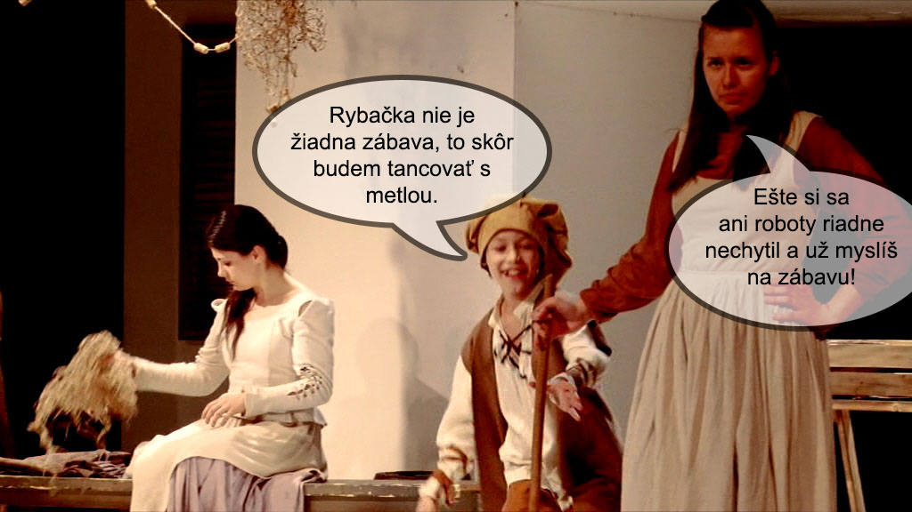
Príbeh malého chlapca Juana, ktorý sníva o dobrodružstve, sa začína v jednej portugalskej dedine, kde si všetci svorne nažívajú a kde sa každý nový deň podobá tomu predošlému. To však Juanovi vôbec neprekáža. Teší sa zo života, veď má predsa milujúcich rodičov.
V dedine ho poznajú ako veselého šibala, ktorý sa vie zabávať, ale aj usilovne pracovať.
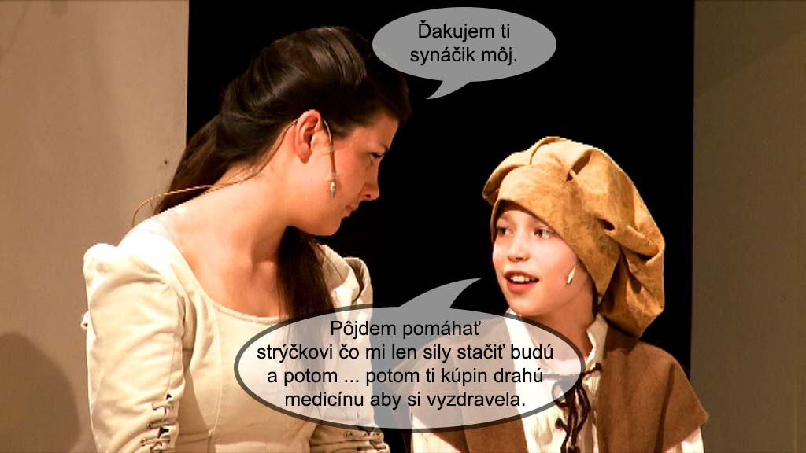
Zdá sa, že je šťastný, že ho nič netrápi. No nie je tomu tak. Rodičia sú chudobní a matka, ktorá je ťažko chorá, si nemôže dovoliť pomoc lekára. Juan často v noci premýšľa, ako by mohol zarobiť zlatky, ktoré snáď jeho matke prinavrátia zdravie.
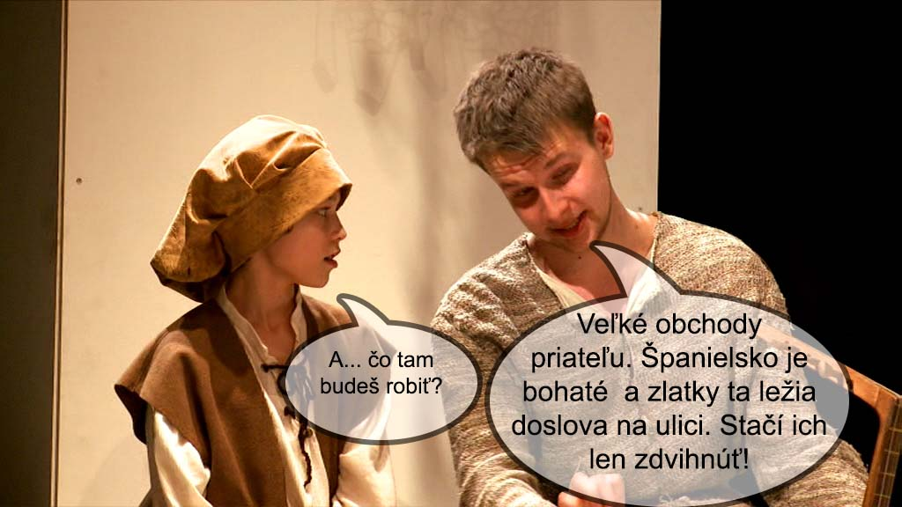
Jedného dňa stretne potulného speváka Antonia Melra. Dozvie sa, že tento neznámy muž má namierené do Španielska, kde vraj zlatky ležia len tak pohodené na ceste. Juan prosí Antonia, aby ho vzal so sebou. Nazdáva sa, že teraz prišla správna chvíľa, na ktorú tak dlho čakal.
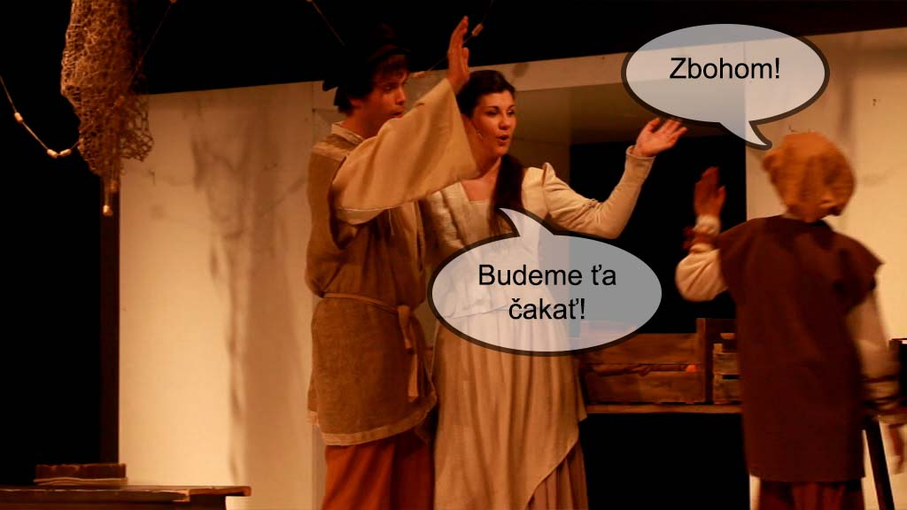
Potulný spevák neváha zobrať chlapca so sebou, pretože v ňom vidí ľahký zdroj zárobku. Keď však po mesiaci putovania malý Juan nenachádza prisľúbené zlatky, sklamaný i rozhorčený zároveň, túži sa vrátiť domov.
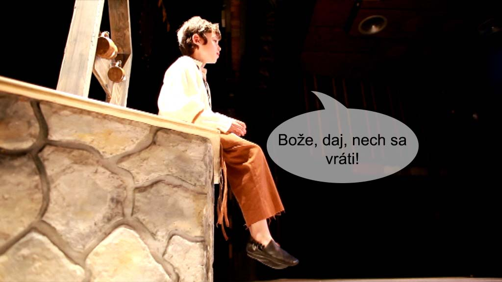
Antonio si uvedomuje, že chlapca uniesol, a že len ťažko bude vysvetľovať svoje konanie Juanovým rodičom. Preto pod zámienkou, že ide kúpiť obom čosi pod zub, necháva chlapca samotného. Juan márne čaká svojho veľkého kamaráta. Antonio Melro sa už nevráti.
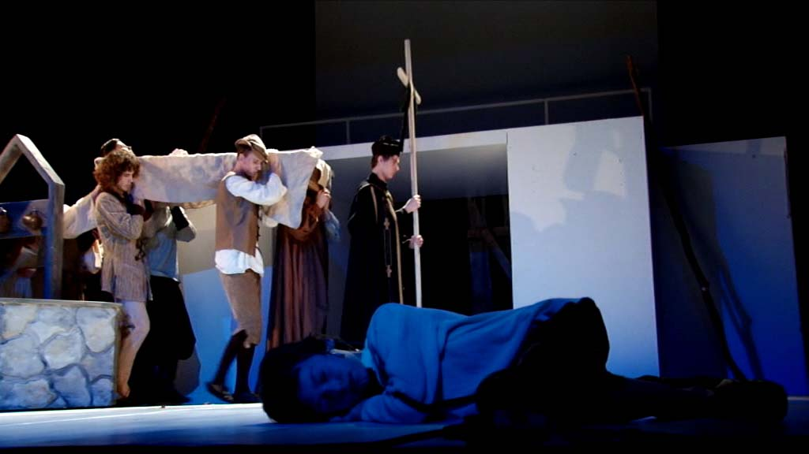
Počas ich putovania zomiera Juanova matka, utrápená žiaľom nad stratou svojho jediného syna.
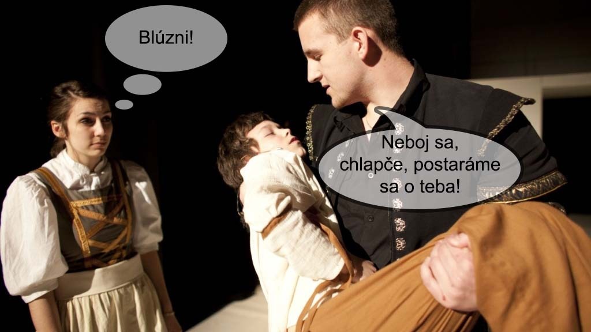
Po Antoniovom odchode, keď sa malý Portugalec preberie zo spánku, si uvedomí, že ostal celkom sám. Nevie si ani spomenúť z kadiaľ prišiel a od únavy a zúfalstva upadá do bezvedomia. Ujme sa ho štedrý seňor Francisco. Zdá sa, že život pastiera v kruhu novej rodiny i priateľov, necháva chlapca zabudnúť na utrpenie, ktorým si prešiel.
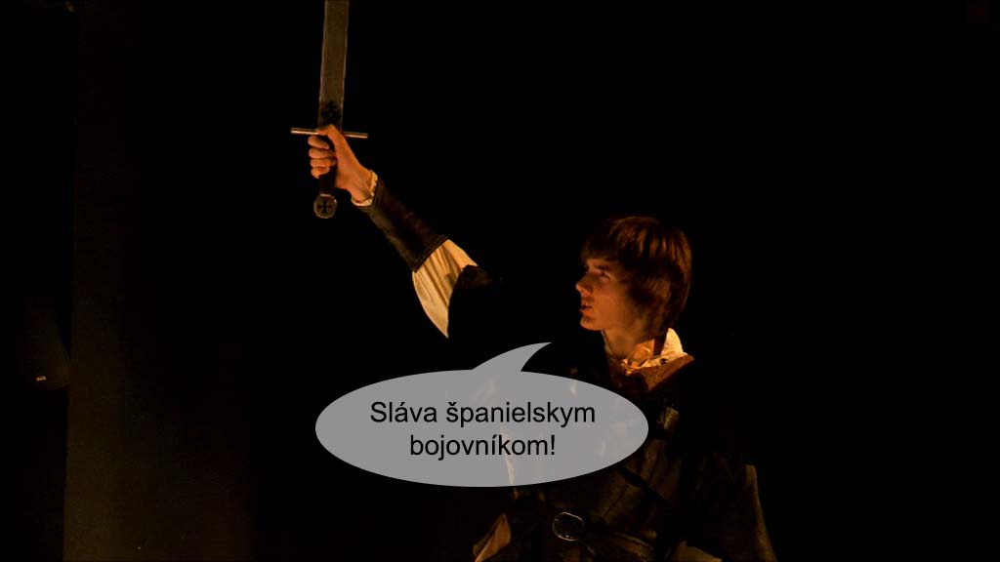
Roky bežia, Juan však nenachádza pokoj pre svoju dušu. Domnievajúc sa, že vojnou konečne utíši búrku vo svojom srdci a oslobodí sa z prázdnoty, ktorá mu nedá spávať, odchádza k žoldnierom. Tí ho učia zabudnúť na všetko pekné a oddať sa iba boju. Zvedený márnosťou a zaslepený túžbou po pomste sa vrhá do veľkého nebezpečenstva.
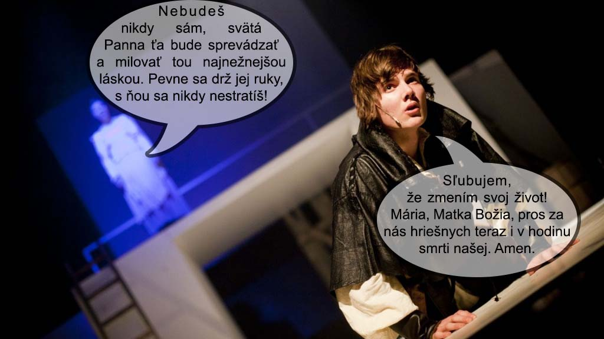
Zrazu začuje hlas svojej matky. Tá sa mu snaží pomôcť, aby sa vrátil na správnu cestu, a tak našiel stratený domov. Juan chce, aby ho sprevádzala i naďalej, bojí sa samoty. Ona ho uisťuje, že nikdy nebude sám. Bude ho chrániť sama Matka Božia.
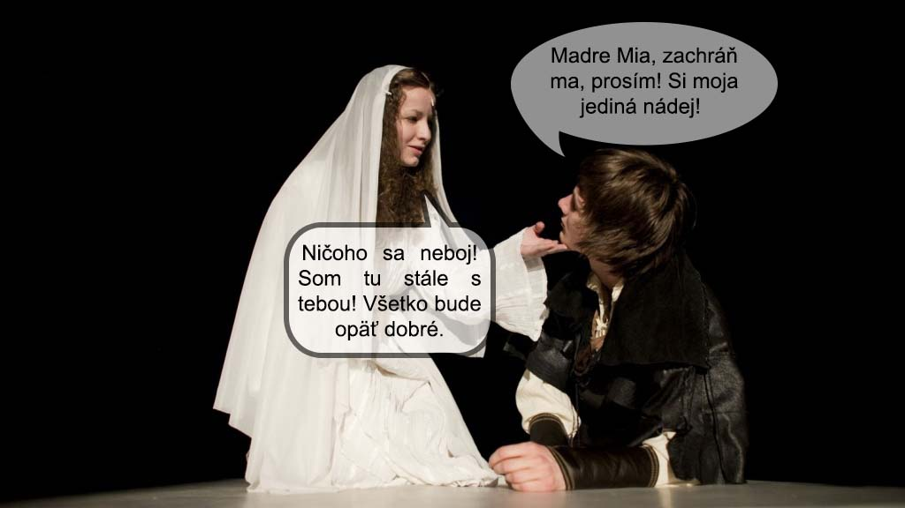
Pri jednom vojenskom zásahu ťažko ranený Juan sľubuje zmeniť svoj život. Vtom prichádza neznáma žena. V nej neskôr spoznáva Pannu Máriu, ktorá mu dáva nielen zdravie, ale i silu zmeniť svoj nepokojný život.
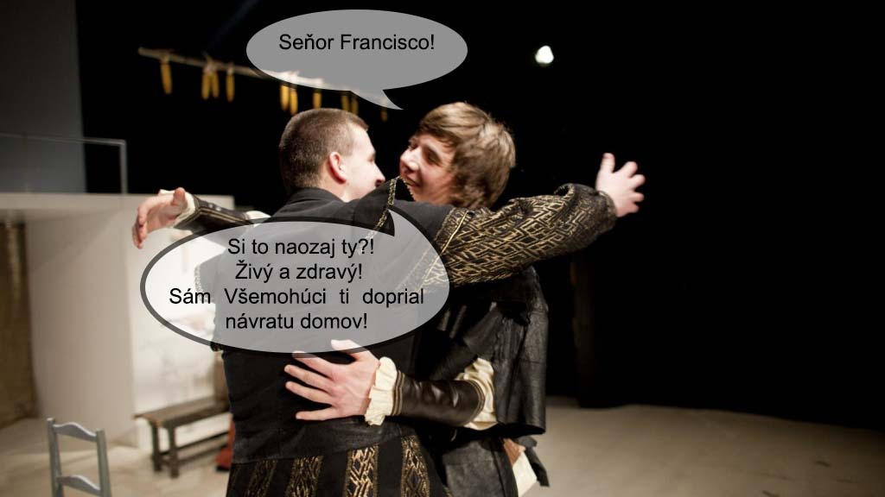
Juan sa vracia do Španielska k seňorovi Franciscovi. Ten ho chce urobiť dedičom svojho majetku a dať mu dcéru Beatriz za ženu.
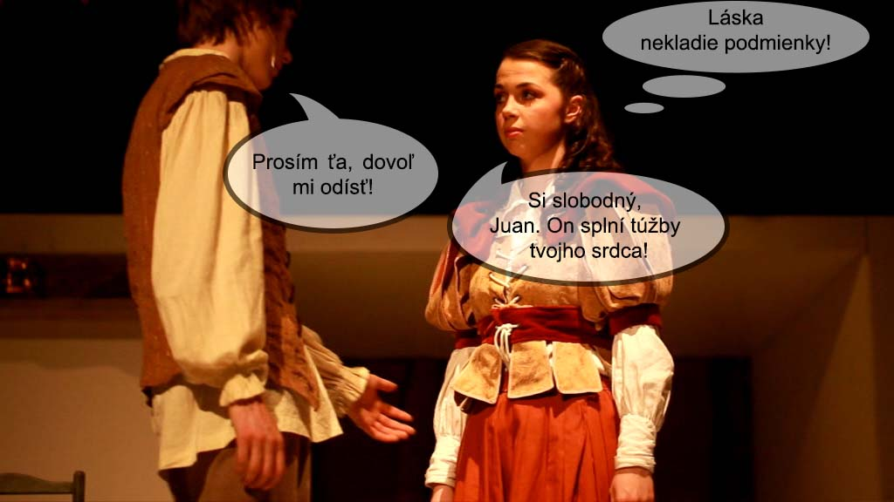
On však cíti, že to nie je cesta, po ktorej by rád kráčal a hoci má rád Beatriz, odchádza opäť preč. Chce spoznať Božiu vôľu, a tak konečne nájsť pokoj pre svoju dušu.
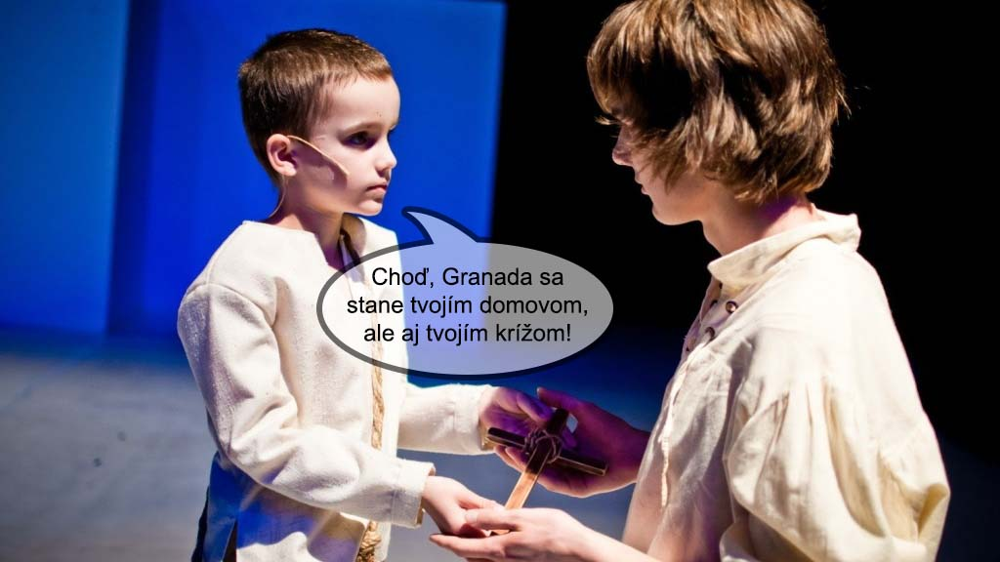
Juan sa stáva predavačom kníh. Jedného dňa stretne malého chlapca. Ten ho posiela do Granady, ktorá sa má stať jeho novým domovom, ale i krížom. Juan spoznáva v chlapcovi Božieho syna a odchádza do Granady, hoci vie, že tam na neho čaká nové utrpenie. Naďalej predáva knihy.
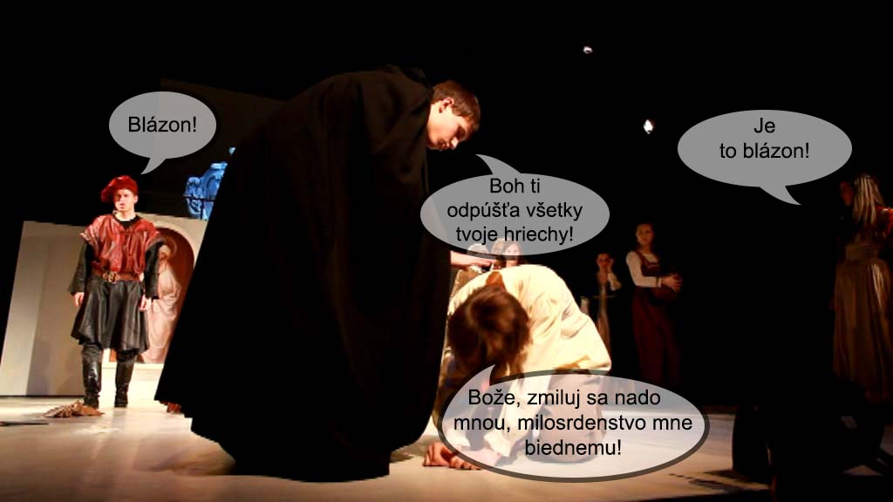
Granaďania si rýchlo obľúbia záhadného predavača. Keď však pri kázni svätého kazateľa Jána z Avily prežije hlbokú ľútosť nad svojim hriešnym životom a prosí priam zúfalo o Božie milosrdenstvo, stretáva sa s veľkým nepochopením. Obyvatelia mesta si myslia, že prišiel o rozum. Rozhodnú sa zavrieť ho medzi bláznov. Neskôr Juana z nemocnice prepustia.
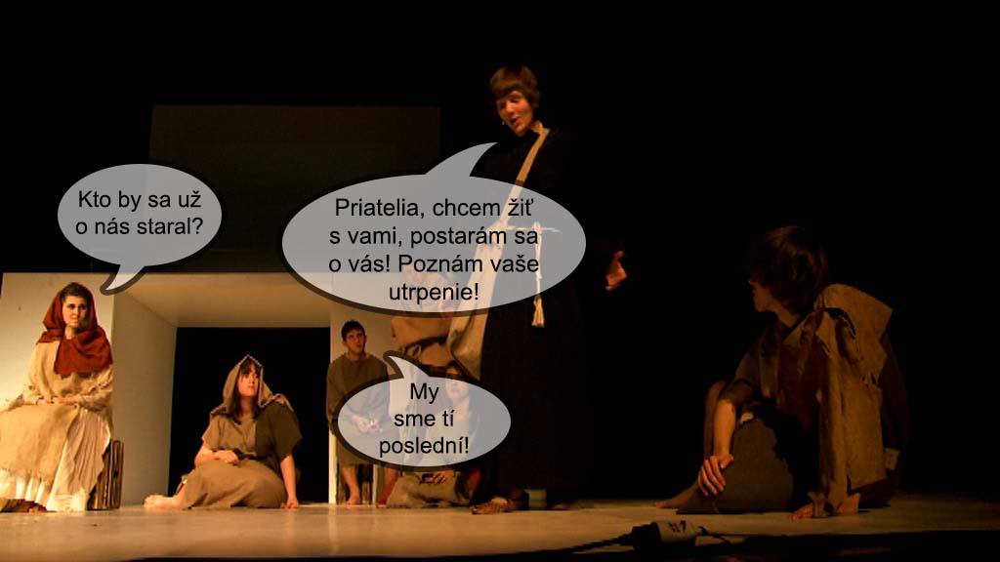
V čase veľkého utrpenia, ktoré zakúsil práve na tomto mieste, v ňom dozrieva rozhodnutie starať sa o najchudobnejších z chudobných, o chorých a opustených, o tých, čo žijú bez nádeje. Konečne nachádza svoje šťastie, vnútorný pokoj a predovšetkým stratený domov.
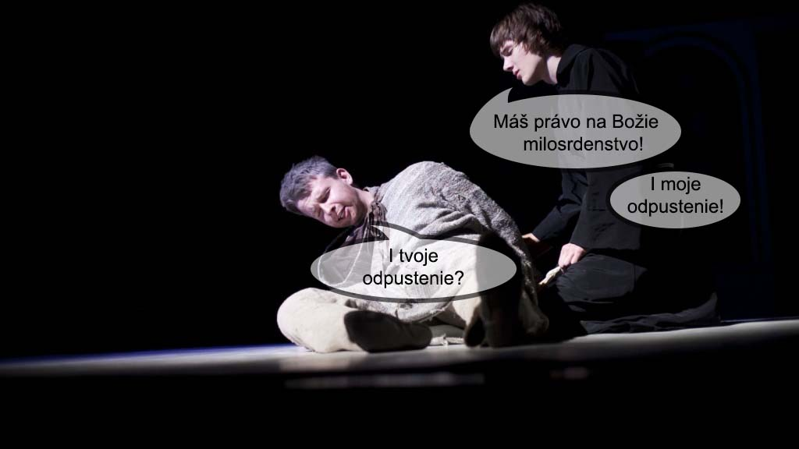
Túžba pomstiť sa svojmu únoscovi akoby úplne zmizla. Keď však jedného dňa v zomierajúcom žobrákovi spoznáva Antonia, zacelená rana sa opäť otvára. Antonia trápia veľké výčitky svedomia. Celý svoj život sa vracal späť ku dňu, kedy uniesol malého nevinného chlapca, o ktorom si myslel, že je už dávno mŕtvy. Juan sa mu necháva spoznať. A pomsta, po ktorej túžil, sa premieňa na odpustenie. Antonio zmierený s Bohom zomiera v jeho náručí.
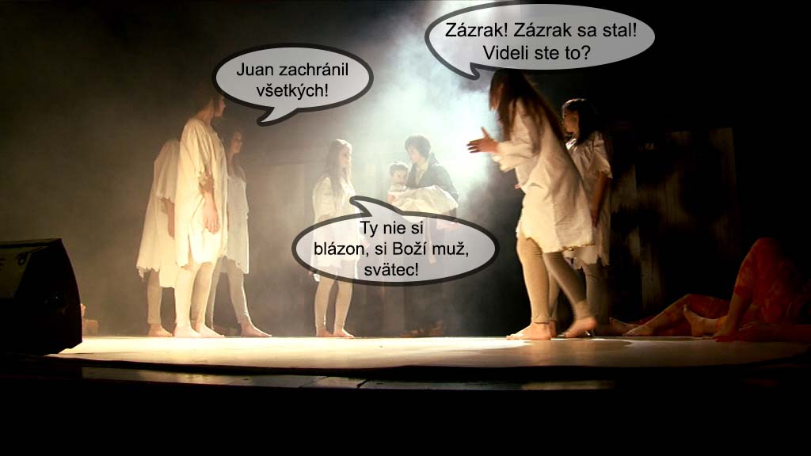
Dej vrcholí pri záchrane pacientov z horiacej nemocnice. Niet nikoho okrem Juana, kto by sa odvážil do nej vstúpiť. A vtedy sa blázon v očiach Granaďanov mení na svätca, pretože iba ten, kto sám horí ohňom, môže vstúpiť doň bez toho, aby mu oheň ublížil. Juan zachraňuje všetkých chorých, a tak víťazí nielen nad ohňom, ale i nad samým sebou, uvedomujúc si, že skutočným víťazom v živote každého človeka je Boží syn, ktorého ranami my všetci sme uzdravení.